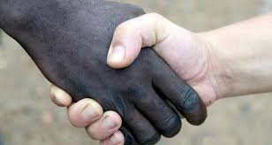

En la mayor parte de América Latina prevalece el racismo hacia los propios orígenes, es decir, hacia los indígenas, pero en México es de lo peor: es deplorable que lo indígena se asocie con lo naco, es como si nos avergonzáramos de lo que somos, es absurdo despreciar nuestra raíz indígena, aseguró el investigador Pedro Jiménez Lara. Con esta postura, Jiménez Lara comenzó la entrevista que se le hizo a propósito de la celebración del 12 de octubre como Día de la Raza. ¿Cuál raza?, ¿qué festejamos?, ¿a nuestra raza indígena o a quienes llegaron a conquistarnos?, cuestionó el académico e investigador del Rememoró: “Fue en 1492 cuando Cristóbal Colón llegó a América, a partir de ahí vinieron capítulos en los que los pueblos nativos se vieron subordinados al yugo español.” Y con profundo sentir, afirmó: “Festejar, entonces, el Día de la Raza significa ignorar las raíces prehispánicas e indígenas, y ponderar el mestizaje que se dio con España. Ello tiene mucho que ver en las prácticas racistas.”
El racismo que se vive en México es del peor: aquel que discrimina a su propia gente, a sus propias raíces, en este caso las indígenas. Aunque ningún tipo de racismo es justificable, puede “entenderse” el rechazo en primer momento hacia lo diferente; por ejemplo, cuando a un país llegan extranjeros queriendo imponer sus ideologías. Pero lo que no puede entenderse es que una nación rechace a su propio pueblo, como ocurre en México. Es deplorable que lo indígena se asocie con lo naco; esto pasa porque se desprecian los propios orígenes. Es como si nos avergonzáramos de lo que somos. Somos un mestizaje, sí, pero no tenemos por qué despreciar nuestra raíz indígena, eso es absurdo.” El gran problema de nuestra sociedad es que nunca creció como nación consolidada retomando sus orígenes. Es como si se hubiera borrado a las culturas milenarias prehispánicas y toda su sapiencia, y a los indígenas que sobrevivieron se les relegó en la selva, en las montañas. Al respecto, Guillermo Bonfil Batalla, en su libro México profundo, explica precisamente cómo el racismo y la marginación han sido la perdición del país: México, a partir de la Conquista y luego la Independencia, trató de imitar el modelo español-europeo para su desarrollo, pero nunca retomó los conocimientos de su gente para resolver los problemas únicos de la nación.
En ese sentido, se logró una independencia ficticia, porque México nunca se liberó del yugo –ideológica y económicamente– que España le trajo. Mismo caso al que se refiere Fernando Benítez en su libro Indios de México, quien destaca el papel fundamental que tienen los pueblos indígenas en la historia que se construye, es decir, la evolución del país. “Queramos o no reconocerlo, tenemos el lastre de pueblo conquistado, eso nos pesa y nos va a seguir pesando históricamente; por eso México discrimina a su propia gente. El mexicano está en contra del propio mexicano”. Aunque todos tenemos derecho a tener un plato de comida caliente todos los días y buscar el bienestar, esto es una utopía, lamentó. Asimismo, las raíces negras (llamada la tercera raíz) siguen siendo motivo de profundo racismo pese a que muchos países latinoamericanos como Brasil, Venezuela, Colombia, Chile, y también México, tienen gran influencia africana. El asunto del racismo es muy severo, lo cual se ve reflejado en el color de la piel, en el cabello, en la lengua, aspectos que siguen importando mucho.
This is Assembly, a free, fully standards-compliant CSS template designed by TEMPLATED. The photos in this template are from Fotogrph. This free template is released under the Creative Commons Attribution license, so you're pretty much free to do whatever you want with it (even use it commercially) provided you give us credit for it. Have fun :)